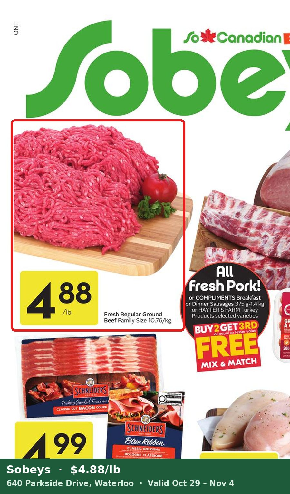
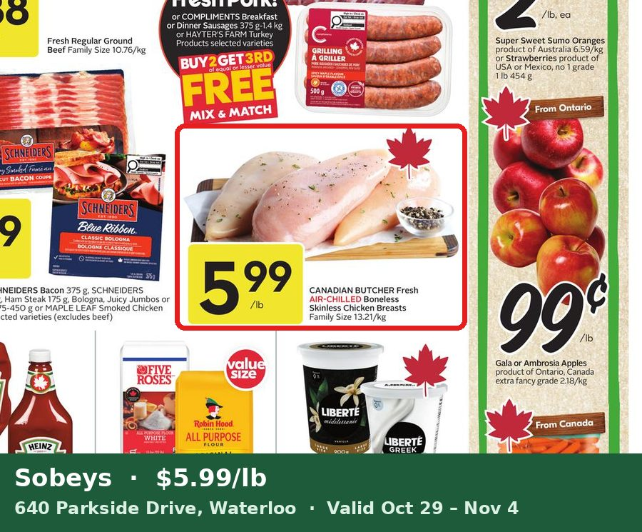
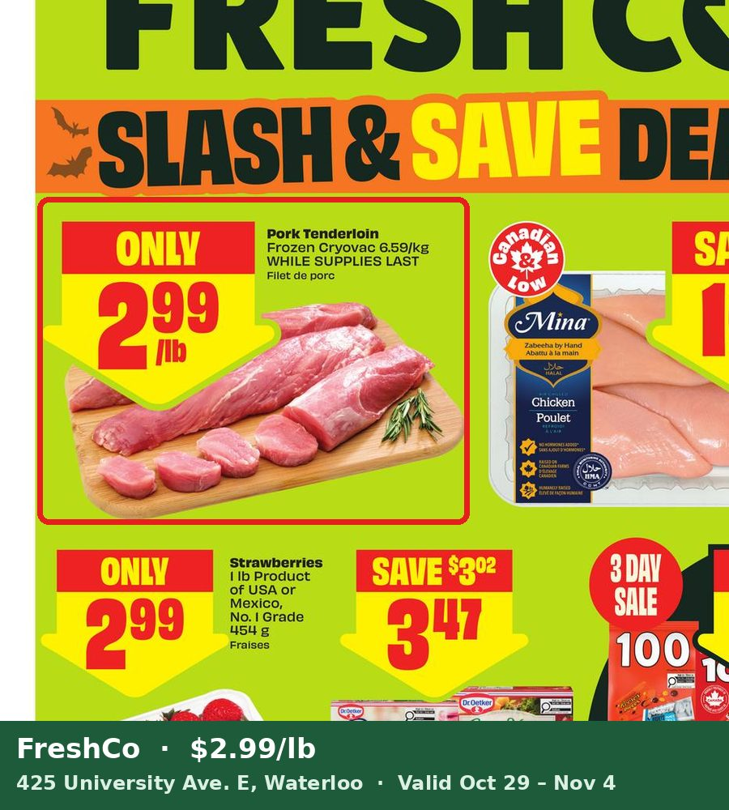
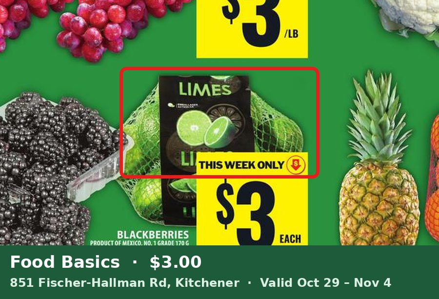
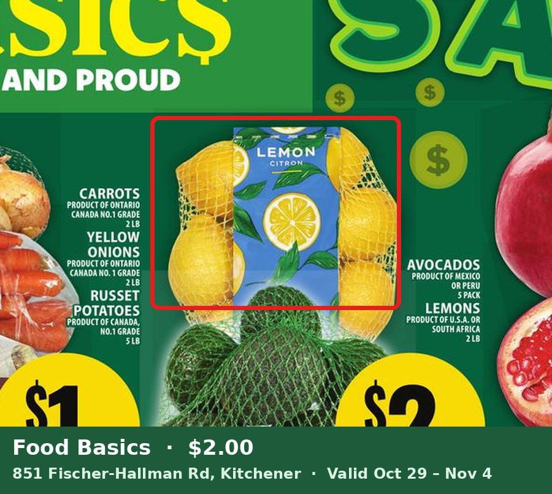
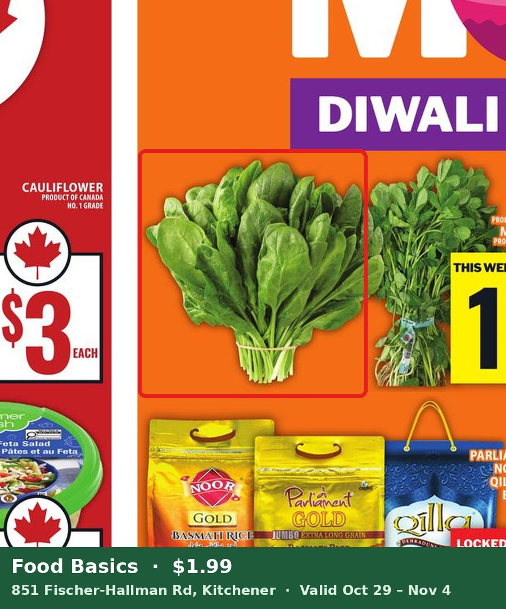
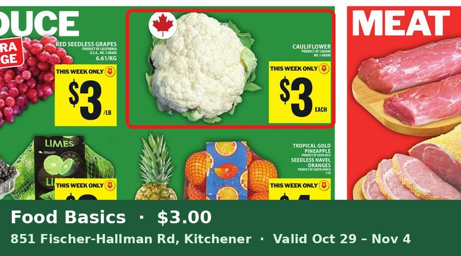
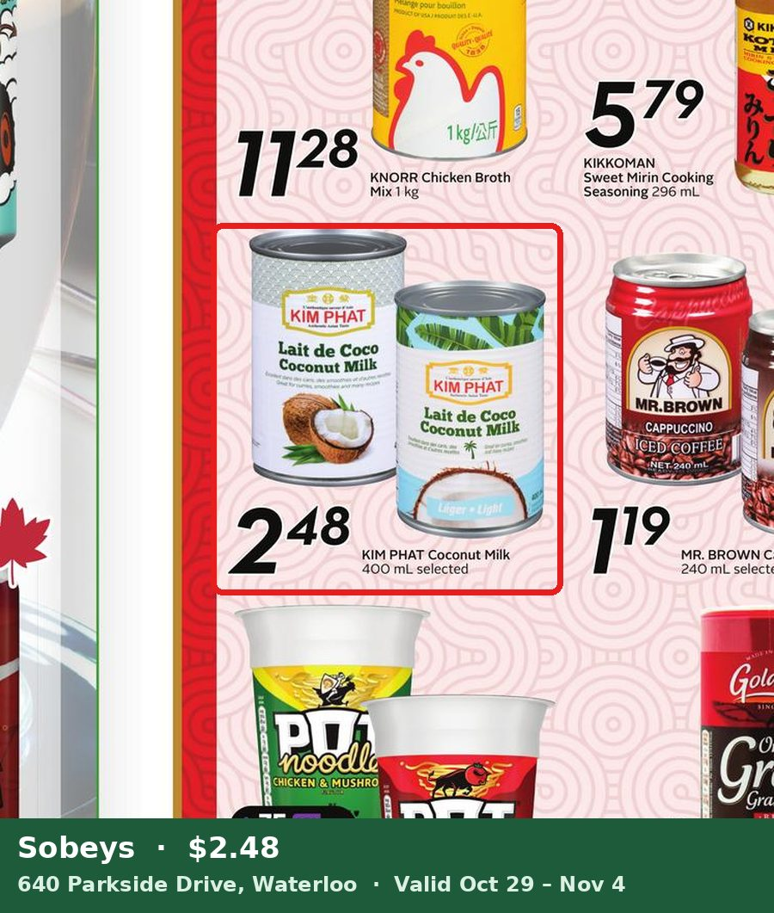

Dinner plan · week of 2026-11-01
Flyers valid Oct 29 – Nov 4 · Shop at No Frills (Paul & Mallory's), 24 Forwell Creek Rd, Waterloo · 6 dinners, gluten-free, ≤45 min
Price matches (8) — show these at the till
Regular ground beef — $4.88/lb at Sobeys
640 Parkside Drive, Waterloo

Boneless skinless chicken breasts — $5.99/lb at Sobeys Ad is Canadian Butcher brand; ask, may not match
640 Parkside Drive, Waterloo

Pork tenderloin (frozen cryovac) — $2.99/lb at FreshCo
425 University Ave. E, Waterloo

Limes, 1 lb bag — $3.00 at Food Basics
851 Fischer-Hallman Rd, Kitchener

Lemons, 2 lb bag — $2.00 at Food Basics
851 Fischer-Hallman Rd, Kitchener

Spinach bunch — $1.99 ea at Food Basics
851 Fischer-Hallman Rd, Kitchener

Cauliflower — $3.00 at Food Basics
851 Fischer-Hallman Rd, Kitchener

Coconut milk, 400 mL — $2.48 at Sobeys Kim Phat brand only
640 Parkside Drive, Waterloo

Grocery list — est. $81.08
Proteins
$6.99/lb
$10.48
$10.48
$4.88/lb
$4.88
$4.88
$10.99/lb
$8.24
$8.24
$8.00
$8.00
$8.00
$5.99/lb
$7.49
$7.49
$2.99/lb
$3.59
$3.59
Produce
$1.49/lb
$2.23
$2.23
$2.49
$4.98
$4.98
$2.99
$2.99
$2.99
$3.99
$3.99
$3.99
$1.29
$1.29
$1.29
$3.00
$3.00
$3.00
$2.00
$2.00
$2.00
$3.99
$3.99
$3.99
$1.49
$1.49
$1.49
$1.49
$1.49
$1.49
$1.49
$1.49
$1.49
$1.99 ea
$3.98
$3.98
$3.00
$3.00
$3.00
Pantry
$2.48
$2.48
$2.48
Estimated total$81.08
Check the pantry: Rice · GF tamari · Honey · Garlic · Cornstarch · Curry powder (check GF) · Cumin, chili powder, paprika, oregano · Italian seasoning · Dijon mustard · Fresh ginger · Olive oil
Dinners
Sun Nov 1 · 35 min · Laughing Spatula
Honey-garlic roasted chicken thighs & sweet potatoesGF recipe (check your Dijon label). Add broccoli to the pan for the last 15 min.
Mon Nov 2 · 30 min · Eat With Clarity
Ground beef taco bowlsUse homemade taco spice (cumin, chili powder, paprika, oregano) instead of a packet.
Tue Nov 3 · 20 min · I Wash You Dry
Lemon-garlic pan-seared salmonServe with roasted mini potatoes (half the bag) and garlicky spinach.
Wed Nov 4 · 45 min · Gluten Free & More
Ginger shrimp stir-frySwap bok choy/edamame for broccoli, mushrooms, peppers, carrots; GF tamari + lime if ponzu isn't labelled GF.
Thu Nov 5 · 40 min · Easy and Delish
Coconut chicken curry with cauliflowerMakes 10 servings, so use ~1/4 with chicken breast + 1 can coconut milk; add spinach. Thaw the pork tonight.
Fri Nov 6 · 30 min · Cup of Yum
Herb garlic pork tenderloin with carrots & potatoesUse the rest of the mini potatoes; broccoli instead of Brussels sprouts.
Estimates assume 2 servings per dinner. Price matches are at staff discretion and need the same item/size. Check labels on sauces, spices and broths for gluten.